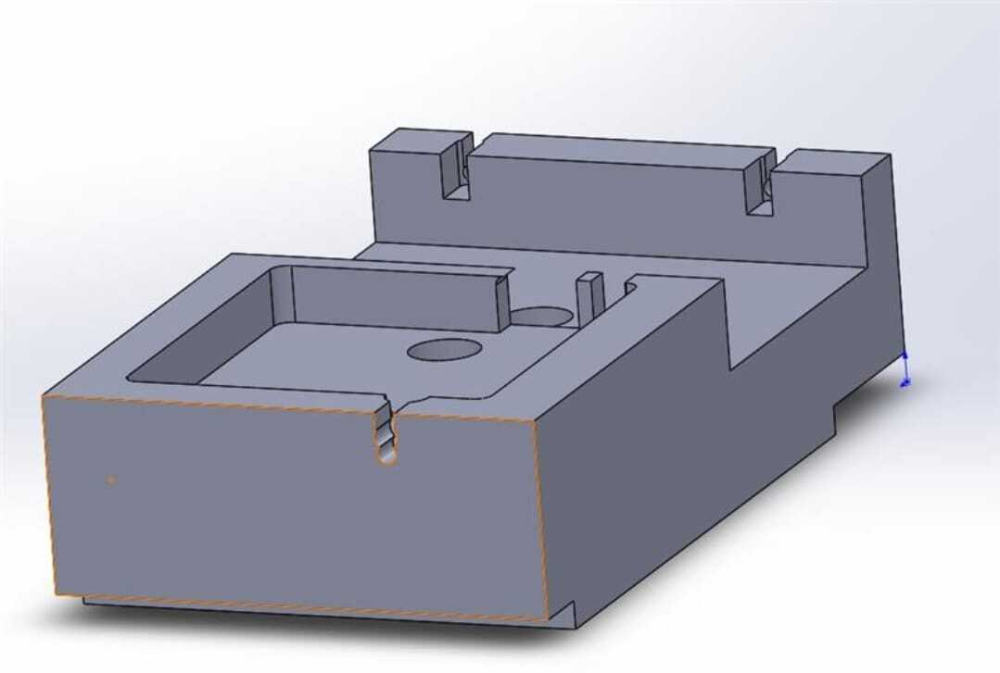
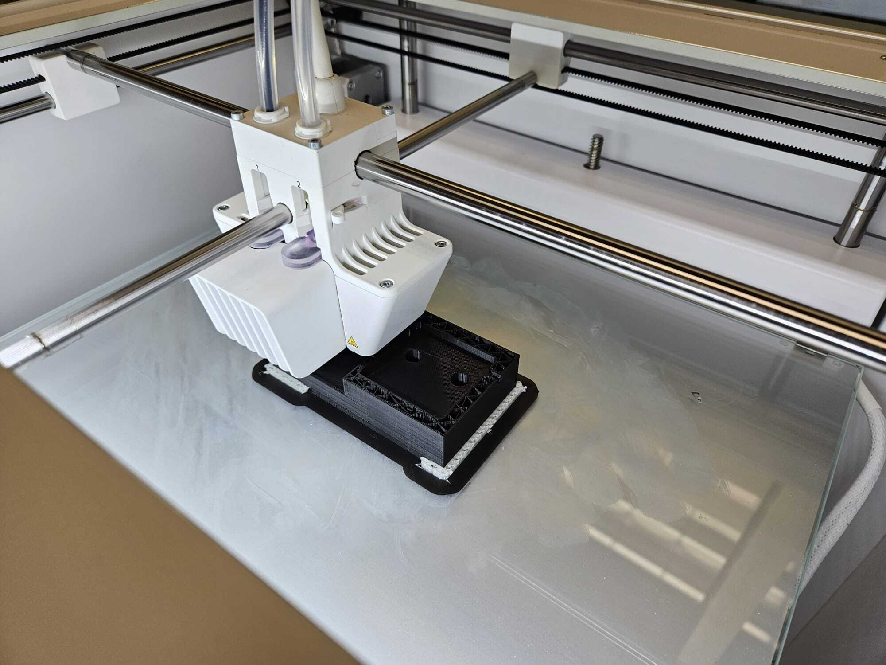
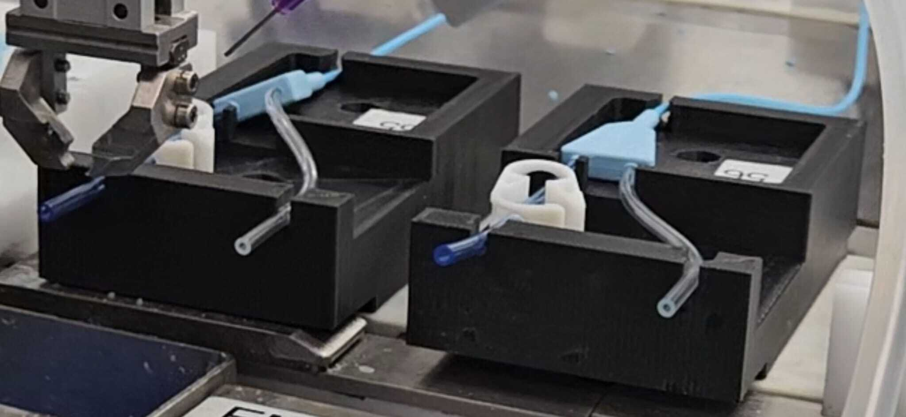
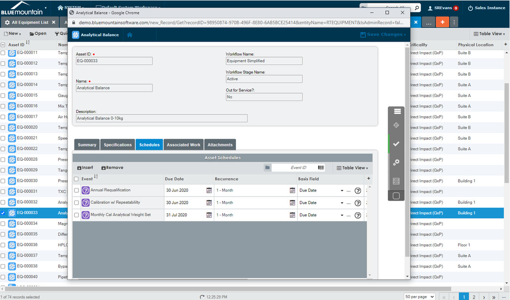
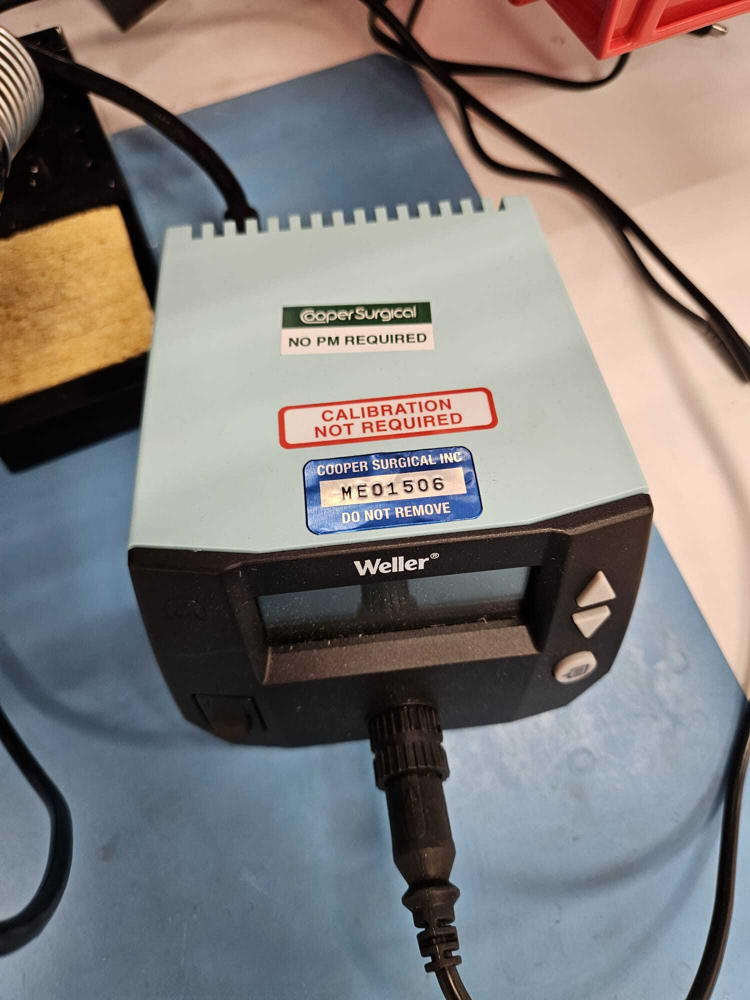
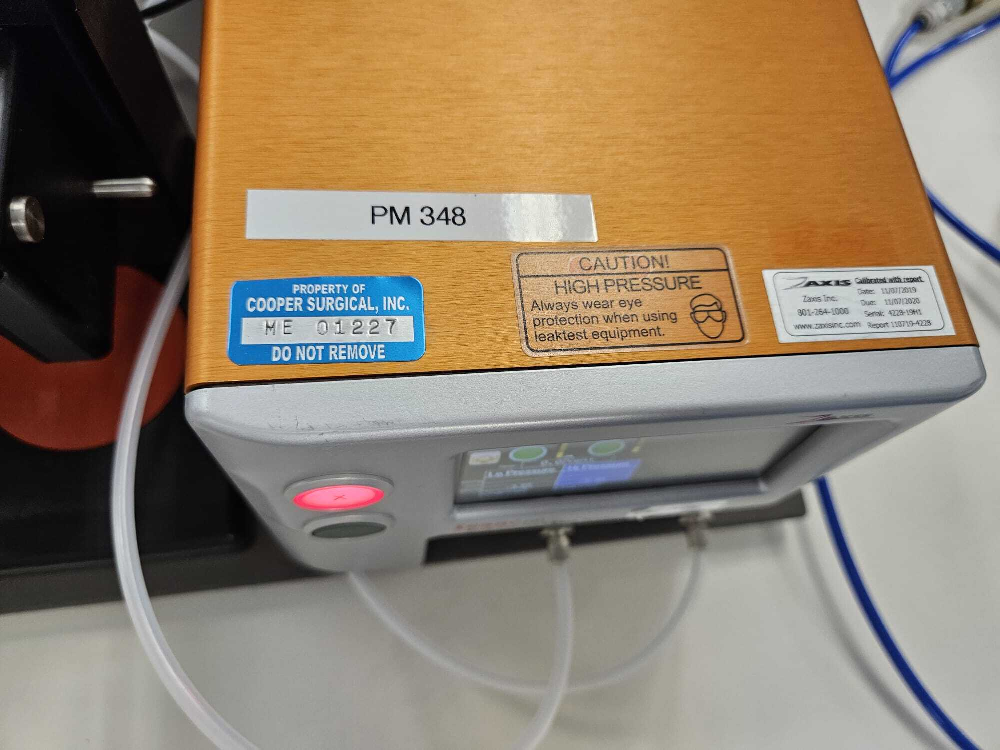
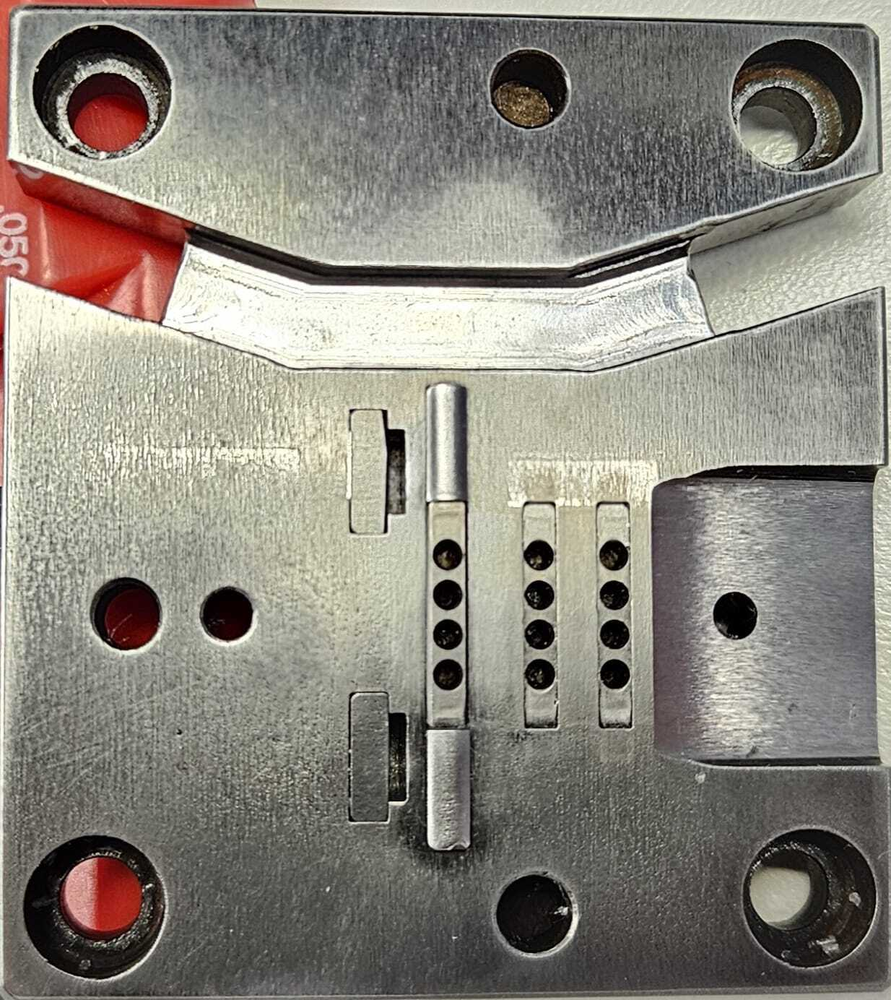
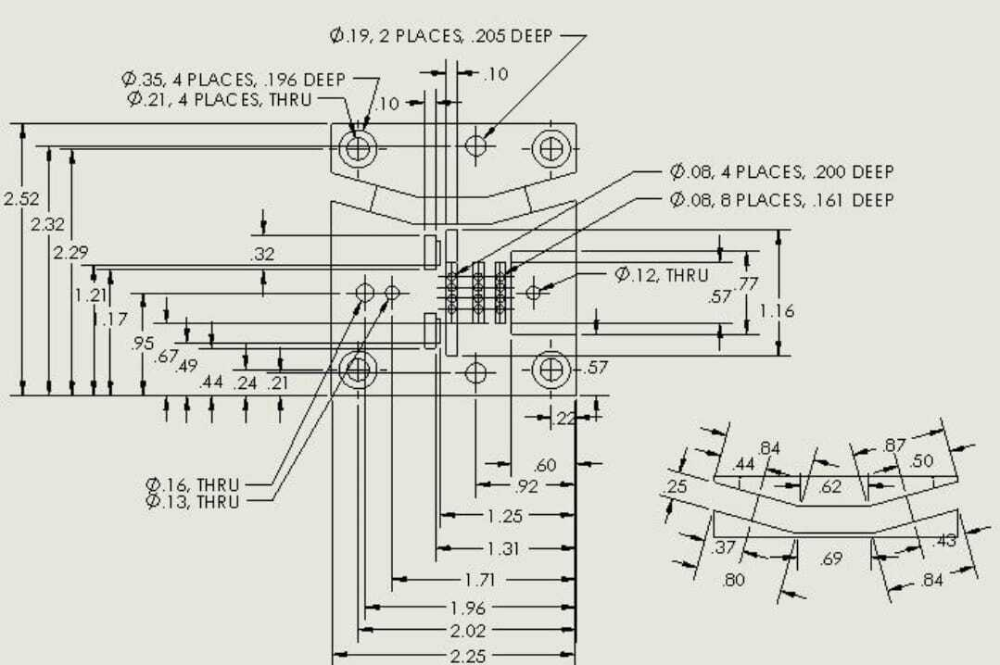
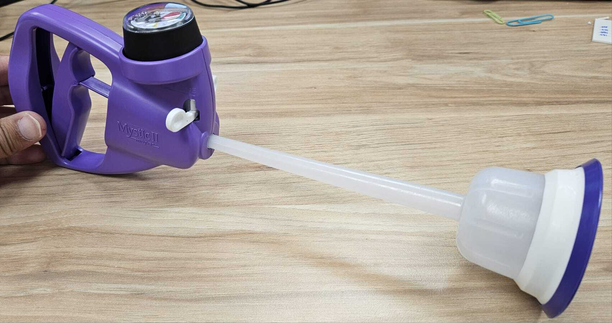
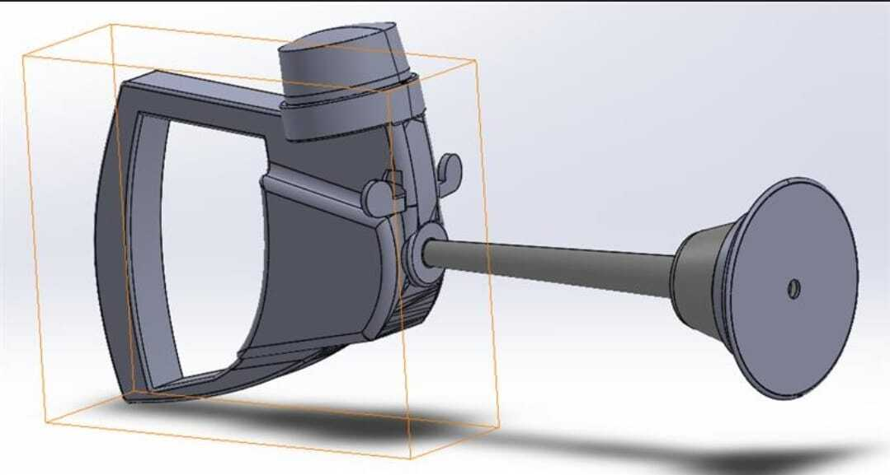

Unimanual Robot – End of Arm Tool (EOAT) Design

Projects
Pick a company/team below to see the projects from that role, each with the problem, tools, challenges, and results — plus a photo gallery at the bottom. Use the arrows on each photo to browse.
Gallery

Gallery










Gallery